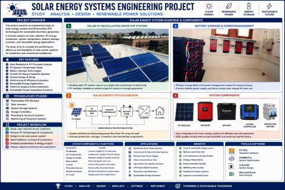

Renewable Energy · Power Systems
Solar Energy Systems — Design, Sizing & Deployment
Designed and sized photovoltaic power systems, covering load assessment, array and battery sizing, inverter and charge-controller selection, and system protection.
Implemented Project
System overview

Author
Mohammed Mahyoub
Scope
Load analysis, component sizing and selection, wiring and protection, and performance estimation.
Use
Solar-powered supply and backup for remote telecommunications and infrastructure sites.
Engineering rationale
Start with energy demand
Load assessment separates instantaneous power from energy consumed over time. Telecommunications equipment and infrastructure loads need an explicit operating schedule before array, storage and inverter choices can be explained.
Sizing dependencies
Array sizing depends on solar resource and losses; battery sizing depends on usable energy and the intended autonomy; inverter selection depends on load characteristics. The diagram shows these dependencies without inventing site irradiance, equipment ratings or measured yield.
Deployment documentation
The published scope covers wiring, protection, performance estimation and remote telecommunications supply/backup. The suggested evidence checklist calls for load schedules, sizing assumptions, component data and commissioning records. It does not claim that those source documents are already publicly available.

Evidence and validation
Review the documented implementation against these validation topics; measured results are shown only where provided by the source.
- Load schedule and daily energy
- Solar resource/loss and autonomy assumptions
- Component compatibility and cable/protection design
- Commissioning readings and performance context
Source gallery
Existing project summary sheet from LinkedIn experience media. Physical-installation photographs and raw commissioning records were not available in the inspected repository.

